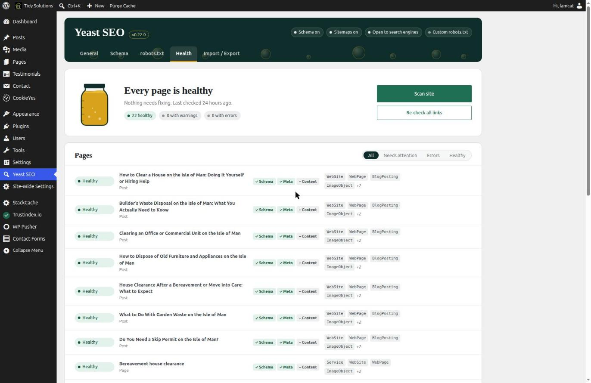
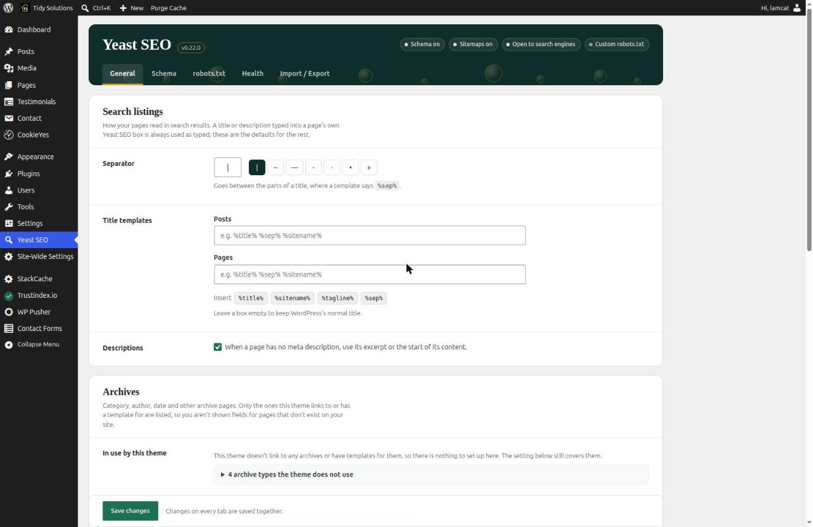
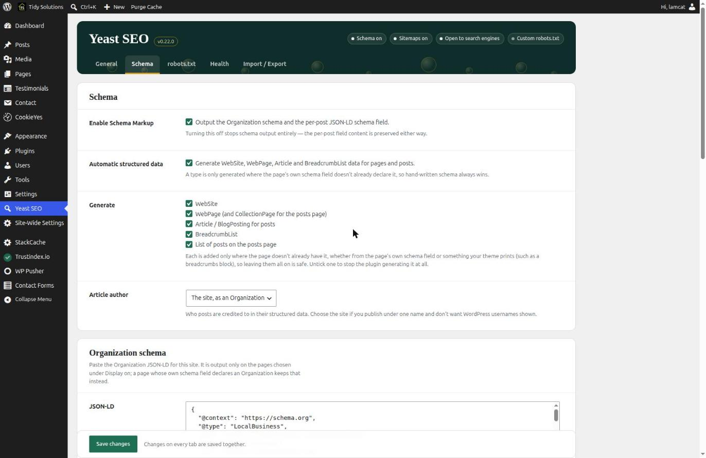
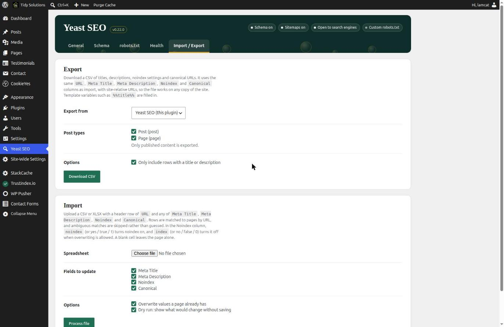
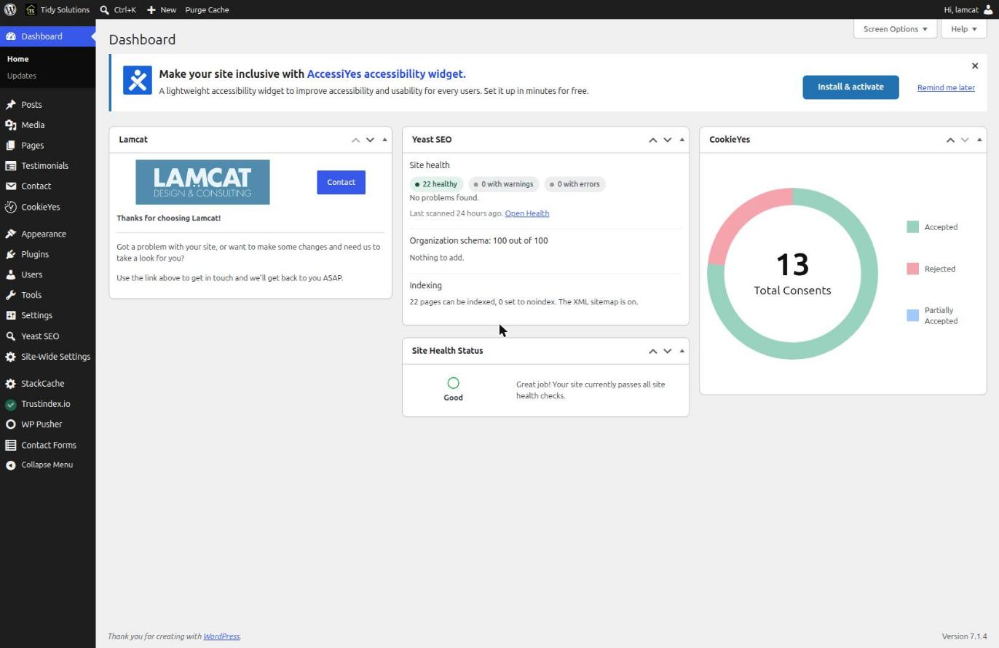

Colours
All values are the plugin's own CSS variables, scoped to .lcp-ys so they never leak into the rest of WordPress. Contrast ratios are measured against the background named.
Core brand
#0f2d2a--ys-ink
Header band, wordmark, selected separator white 14.7:1
#1a413c--ys-ink-soft
Hover and secondary surfaces on ink
#1f6f55--ys-leaf
Primary buttons, checkmarks, links on white white 6.1:1
#165540--ys-leaf-dark
Primary button hover
#d9a21b--ys-gold
Active tab underline, warning accent, jar contents on ink 6.4:1
#f6e3a8--ys-gold-soft
Version chip outline and soft highlights
Text and lines
#1d2327--ys-text
Body text (WordPress's own text colour) on white 15.9:1
#646970--ys-muted
Descriptions, hints, meta text on white 5.5:1
#dcdcde--ys-line
Card and input borders
#eef0f0--ys-line-soft
Row dividers inside cards
#f8faf9(literal)
Tinted panels and expanded rows
Status pairs (background / text)
#e4f2ec--ys-ok-bg / -fg
Healthy chip. Text #14543f 7.7:1
#fdf0cb--ys-warn-bg / -fg
Warning chip. Text #6b4a00 7.1:1
#fbe4e1--ys-err-bg / -fg
Error chip. Text #8a1c14 7.7:1
#eceef0--ys-neutral-bg / -fg
Not checked, zero counts. Text #4a5157 6.9:1
Other colours in the stylesheet
| Value | Where it appears |
|---|---|
#fff | Card background (23 uses) |
#f6f7f7, #f0f0f1, #f3f4f4, #f1f6f4, #fbfbfc | Five near-identical greys for panels and inputs |
#b3261e, #b32d2e, #8f1f19 | Three different reds for error borders and the destructive button |
#e9b93a, #c9a227, #996800 | Three more golds: jar surface, pending bar, hint text |
#8fb8a8 | Disabled primary button |
Worth tidying in the rebrand: the greys, reds and golds above should collapse to the named tokens. The pending-import bar used a variable name that did not exist (it fell back to #c9a227); it now uses --ys-gold.
Type and shape
| Role | Value |
|---|---|
| Display (wordmark, card headings, jar caption) | "Iowan Old Style", "Palatino Linotype", Palatino, "Book Antiqua", Georgia, serif (system fonts, nothing loaded) |
| Body and controls | WordPress admin system stack, inherited |
| Radius | 14px header band, 8px cards and panels, 6px and 4px inputs and rows, 99px chips |
| Chips | Pill with a leading dot (circle ok, diamond warning, triangle error), so status never depends on colour alone |
Screens
From the live site, tidysolutions.im, which runs 0.22.0. Admin chrome (left menu, top bar) belongs to WordPress.
Health
The signature screen: the jar, the totals, and every page with its Schema, Meta and Content marks. The jar fills with gold as pages become healthy.

General
Settings cards inside the header band. Serif headings, label column on the left, controls on the right, a sticky Save bar.

Schema
Checkboxes with explanations, then the Organization JSON-LD box. The score card and the wizard sit further down this tab.

Import / Export
Export then Import in cards, with the dry-run option. A dry run now keeps its file with Apply and Cancel at the top.

Dashboard widget
The widget in the middle column: health pills, top problems, Organization score and indexing. It follows WordPress's own widget styling, using Yeast's chips.

Not captured here
These exist but need a state to show: the Organization score card and six-step wizard (Schema tab, further down), the dry-run results with their tally chips, the waiting-file bar with Apply and Cancel, the Health tab with problems listed ("Fix these first"), and the per-page expanded rows. The tidynew dev site has problems to show for the Health tab if a designer wants to see it with errors.